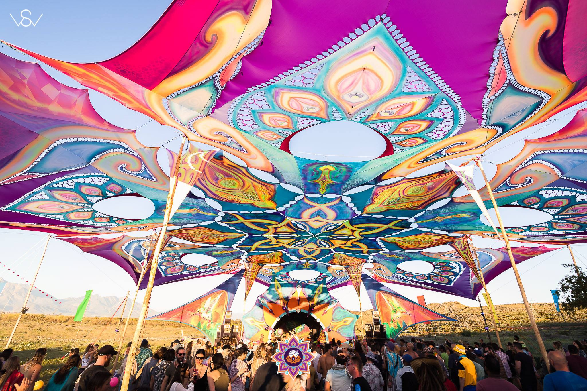
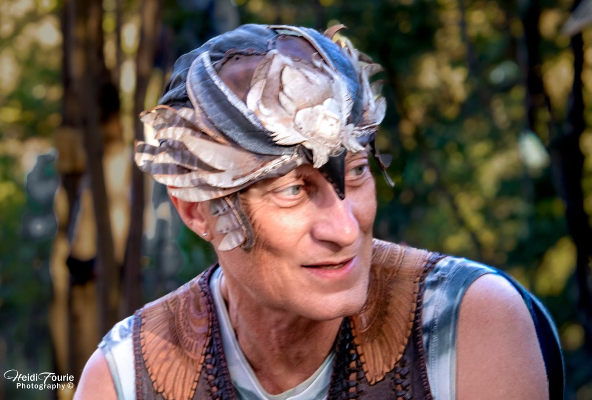
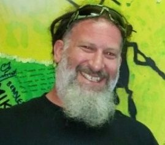
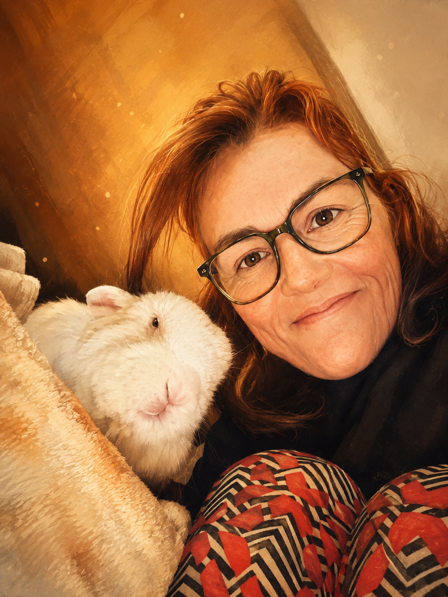
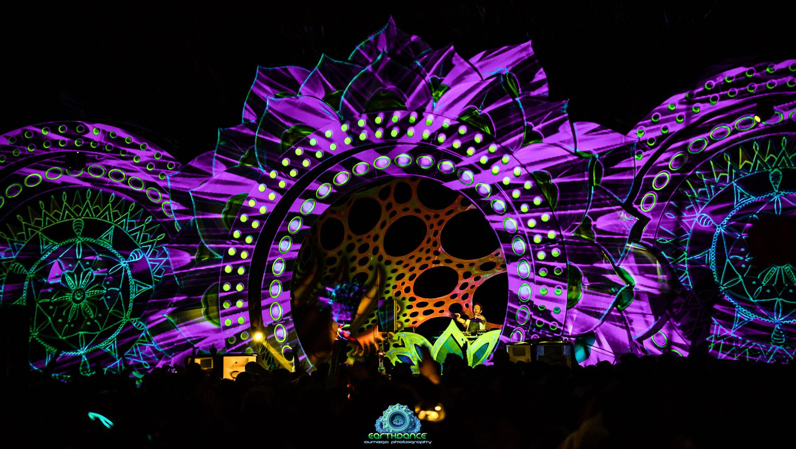

Dear Earthdance family,
A letter from us
Earthdance is still ours to shape.
Earthdance has never belonged to one production team, one dancefloor or one moment in time. It has taken shape over years through the people who brought their energy, their care and their belief that gathering could mean more.
You are part of that story. Whether you came to dance until sunrise, stood for the Prayer for Peace, built, played, created, volunteered or simply showed up with an open heart—you helped give Earthdance its character.
A team came together last year to bring back Earthdance Cape Town. They are here again for 2026: building on what they learned, deepening what worked and taking responsibility for the gathering with care.
This year is an opportunity for the team to welcome the wider Earthdance family back—and for you to meet the people now carrying the work. We want long-held friendships to find one another again, new ones to begin, and the Prayer for Peace to be surrounded by a community that knows its weight.
Your presence can help us carry the story forward without losing its heart.
Come back to Earthdance
The team behind the return
Come and meet us
The people welcoming you back.
This is the team that brought Earthdance Cape Town back in 2025. In their second year together, they are building on that return—and looking forward to meeting more of the Earthdance family around the dancefloor, the fire and the Prayer for Peace.
Meet us at Earthdance
Earthdance custodian · festival lead
Michael “Birdman” Aldridge
Birdman has spent decades exploring the meeting point between trance, consciousness and collective transformation. His journey runs from Johannesburg’s early techno raves and seven years of ceremony at Altered States to Earthdance’s 1999 gathering in Dharamsala.
He has helped carry the Prayer for Peace tradition in South Africa ever since. When the previous Earthdance Cape Town organizers discontinued their involvement in the event, Birdman secured the licence from the Earthdance Global organization, called the community together and helped bring Earthdance back in 2025. In 2026, he continues as its custodian and festival lead.

Music & programme
Mikey Dredd
Mikey was part of the foundational late-1990s and early-2000s South African psytrance scene, closely tied to the Mushroom Mafia era and remembered for marathon sets that helped define those early outdoor gatherings.
He joined Earthdance production in 2008 and has worked across stage, sound and operations, connecting Johannesburg and Cape Town crews along the way. Part of the 2025 return team, he now brings that deep dancefloor knowledge to the 2026 programme and to Frequency Check, which he co-hosts with the Birdman.

Production manager
Jennifer Walker
Jennifer is Earthdance Cape Town’s Production Manager for 2026 and was part of the team that brought the gathering back in 2025. She is an event producer and systems thinker with 25 years spent between complex systems and the people who use them.
Her focus is making Earthdance sustainable without sanding away what makes it matter. Top-quality production should support participation, not replace it: creating the conditions for people to arrive as co-creators of an independent, community-rooted gathering centred on the global Prayer for Peace.

Why Earthdance still matters
It was never only a party.
Earthdance began with dancefloors in different countries moving at the same moment for the same reason: a Prayer for Peace, danced instead of spoken.
We still stop together for that link-up beneath the Kromrivier sky, alongside gatherings around the world. That shared moment is the thread through all the music, tents, dust and sunrise.
Before summer runs away with us, Earthdance is the deep breath—the weekend that asks what we are gathering for.
Dance the Prayer for PeaceWhy we are writing to you
The thread between us
A living culture grows through participation.
Every Earthdance is made by the people who answer the call. The 2026 gathering will be no different.
Some will arrive knowing every beat of its history. Others will discover the Prayer for Peace for the first time. The magic lies in what they bring to one another.
We are inviting the Earthdance family back into that circle—not as an audience for what we are making, but as part of what makes it Earthdance.
Take your place in the circleYour private invitation
Be part of what comes next.
R980 for one homecoming ticket, in your name.
On Quicket, enter the email address this invitation was sent to in the promotional code box. Your homecoming ticket will then appear, ready to book. Quicket handles the order, payment and ticket confirmation.
If you are bringing someone, use your email address to reveal your own homecoming ticket and buy theirs at the standard price.
Reveal your ticket on Quicket18–20 September 2026 · Kromrivier Farm · Three days and two nights · Camping included